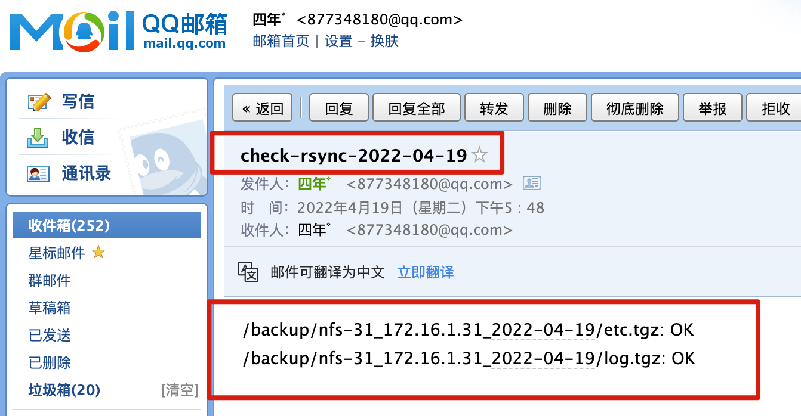

06-备份任务实战
今天的任务主要以实际备份任务入手，完成综合练习，完成对rsync的综合运用。
- 先看需求
- 再讲解
- 再次动手实践
客户端需求
客户端需求：
1.客户端每天凌晨1点在服务器本地打包备份(/etc目录和/var/log目录)
2.客户端备份的数据必须存放至以 "主机名_ip地址_当前时间" 命名的目录中
3.客户端最后通过rsync推送本地已经打包好的备份文件至backup服务器
4.客户端服务器本地保留最近7天的数据，避免浪费磁盘空间
服务端需求
服务端需求：
1.服务端部署rsync,用于接收客户端推送过来的备份数据
2.服务端需要每天校验客户端推送过来的数据是否完整
3.服务端需要每天校验的结果通知给管理员
4.服务端仅保留6个月的备份数据,其余的全部删除
注意:所有服务器的备份目录必须都为/backup
客户端需求拆解
先把大需求，拆分为每一个小需求，思考出解决办法，然后再综合操作，也可以写成脚本。
1.打包备份
客户端每天凌晨1点在服务器本地打包备份(/etc目录和/var/log目录)
- 注意tar命令打包，尽量以相对路径去打包
- /etc目录是为了备份系统配置文件、应用配置文件
- /var/log是为了备份所有应用程序的日志
/etc备份
[root@nfs-31 ~]#mkdir /backup
[root@nfs-31 ~]#cd / && tar -zcf /backup/etc.tgz etc
[root@nfs-31 ~]#ll /backup/etc.tgz -h
-rw-r--r-- 1 root root 9.4M Apr 19 16:48 /backup/etc.tgz
/var/log备份
[root@nfs-31 ~]#cd / && tar -zcf /backup/log.tgz var/log
[root@nfs-31 ~]#
[root@nfs-31 ~]#ll -h /backup/log.tgz
-rw-r--r-- 1 root root 492K Apr 19 16:50 /backup/log.tgz
2.文件夹命名要求
2.客户端备份的数据必须存放至以"主机名_ip地址_当前时间"命名的目录中
期望的结果是，如nfs-31_10.0.0.31_2022-04-19
1.提取主机名
[root@nfs-31 ~]#hostname
nfs-31
2.提取ip地址
[root@nfs-31 ~]#ifconfig eth0 |awk 'NR==2{print $2}'
10.0.0.31
3.时间设置
[root@nfs-31 ~]#date +%F
2022-04-19
4.拼接在一起，文件夹命名的命令如下
[root@nfs-31 ~]#echo "$(hostname)_$(ifconfig eth0 |awk 'NR==2{print $2}')_$(date +%F)"
nfs-31_10.0.0.31_2022-04-19
5.创建文件夹，你也可以用内网ip操作
要求，在备份目录下，创建以格式要求的文件夹
mkdir -p /backup/$(hostname)_$(ifconfig eth1 |awk 'NR==2{print $2}')_$(date +%F)
6.检查最终的rsync备份目录
[root@nfs-31 /]#tree /backup/
/backup/
└── nfs-31_172.16.1.31_2022-04-19
├── etc.tgz
└── log.tgz
1 directory, 2 files
3.文件传输
3.客户端最后通过rsync推送本地已经打包好的备份文件至backup服务器
注意rsync服务的搭建，以及认证方式到底是什么，是密码文件，还是变量
export RSYNC_PASSWORD=yuchao666
[root@nfs-31 /]#rsync -avzP /backup/ rsync_backup@172.16.1.41::backup
sending incremental file list
./
nfs-31_172.16.1.31_2022-04-19/
nfs-31_172.16.1.31_2022-04-19/etc.tgz
9,809,921 100% 37.45MB/s 0:00:00 (xfr#1, to-chk=1/4)
nfs-31_172.16.1.31_2022-04-19/log.tgz
507,599 100% 1.85MB/s 0:00:00 (xfr#2, to-chk=0/4)
sent 10,105,838 bytes received 73 bytes 20,211,822.00 bytes/sec
total size is 10,317,520 speedup is 1.02
4.删除过期文件
4.客户端服务器本地保留最近7天的数据，避免浪费磁盘空间
find /backup/ -mtime +7 -delete
5.整合脚本
把上述拆解的过程，写成一个脚本、批量执行。
当然这个脚本还可以有多的优化。
#!/bin/bash
# 1.创建目录，注意目录名字规则
mkdir -p /backup/$(hostname)_$(ifconfig eth1|awk 'NR==2{print $2}')_$(date +%F)
# 2.打包备份数据
cd / && tar -zcf /backup/$(hostname)_$(ifconfig eth1|awk 'NR==2{print $2}')_$(date +%F)/etc.tgz etc
cd / && tar -zcf /backup/$(hostname)_$(ifconfig eth1|awk 'NR==2{print $2}')_$(date +%F)/log.tgz var/log
# 3.传输客户端备份数据到，rsync备份服务器上，别忘记是如何验证密码的
export RSYNC_PASSWORD=yuchao666
rsync -az /backup/$(hostname)_$(ifconfig eth1|awk 'NR==2{print $2}')_$(date +%F) rsync_backup@172.16.1.41::backup
# 4.删除过期文件
find /backup/ -mtime +7 -delete
6.调试脚本
只显示执行过程，而不会真的执行，发生修改，用于调试程序 -x参数
[root@nfs-31 /]#bash -x rsync_test.sh
服务端需求拆解
1.脚本化部署rsyncd服务端
1.服务端部署rsync,用于接收客户端推送过来的备份数据
配置rsyncd服务端的的全流程，也可以写成脚本，一键安装了
#!/bin/bash
yum install rsync -y
cat > /etc/rsyncd.conf << 'EOF'
uid = www
gid = www
port = 873
fake super = yes
use chroot = no
max connections = 200
timeout = 600
ignore errors
read only = false
list = false
auth users = rsync_backup
secrets file = /etc/rsync.passwd
log file = /var/log/rsyncd.log
[backup]
comment = chaoge rsync backup!
path = /backup
EOF
useradd -u 1000 -M -s /sbin/nologin www
mkdir -p /{backup,data}
chown -R www:www /{backup,data}
echo "rsync_backup:yuchao666" > /etc/rsync.passwd
chmod 600 /etc/rsync.passwd
systemctl start rsyncd
2.校验数据完整性
2.服务端需要每天校验客户端推送过来的数据是否完整
通过md5sum命令即可生成文件的唯一校验值，等于添加了一个防伪标记。
此时需要修改客户端的脚本了，多一个对文件校验的过程
#!/bin/bash
# 1.创建目录，注意目录名字规则
mkdir -p /backup/$(hostname)_$(ifconfig eth1|awk 'NR==2{print $2}')_$(date +%F)
# 2.打包备份数据
cd / && tar -zcf /backup/$(hostname)_$(ifconfig eth1|awk 'NR==2{print $2}')_$(date +%F)/etc.tgz etc
cd / && tar -zcf /backup/$(hostname)_$(ifconfig eth1|awk 'NR==2{print $2}')_$(date +%F)/log.tgz var/log
# 2.1 添加文件校验
md5sum /backup/$(hostname)_$(ifconfig eth1|awk 'NR==2{print $2}')_$(date +%F)/*.tgz > /backup/md5_tgz.txt
# 3.传输客户端备份数据到，rsync备份服务器上，别忘记是如何验证密码的
# 这里注意，要把该目录所有的文件数据发过去了
export RSYNC_PASSWORD=yuchao666
rsync -az /backup/ rsync_backup@172.16.1.41::backup
# 4.删除过期文件
find /backup/ -mtime +7 -delete
此时在rsync服务端，可以通过命令校验文件完整性
[root@rsync-41 ~]#md5sum -c /backup/md5_tgz.txt
/backup/nfs-31_172.16.1.31_2022-04-19/etc.tgz: OK
/backup/nfs-31_172.16.1.31_2022-04-19/log.tgz: OK
3.邮件通知
3.服务端需要每天校验的结果通知给管理员
这里你就照抄就好，固定步骤而已，更换为你自己的qq邮箱即可
然后需要打开qq邮箱的smtp服务器的授权码，自己去获取
注意授权码别泄露给别人
#1.安装配置mailx：
yum install mailx -y
#2.邮箱配置文件
cat > /etc/mail.rc << 'EOF'
set from=877348180@qq.com
set smtp=smtps://smtp.qq.com:465
set smtp-auth-user=877348180@qq.com
set smtp-auth-password=beedsjswqcdfbaje
set smtp-auth=login
set ssl-verify=ignore
set nss-config-dir=/etc/pki/nssdb/
EOF
#3.服务端生成校验结果文件:
md5sum -c /backup/md5_tgz.txt > /backup/check_md5_result.txt
#4.校验发送命令，把校验结果，发给于超老师的qq邮箱
# 语法 mail -s "邮件主题" 邮箱 < 邮件正文
mail -s "check-rsync-$(date +%F)" 877348180@qq.com < /backup/check_md5_result.txt

4.过期文件删除
4.服务端仅保留6个月的备份数据,其余的全部删除
find /backup -mtime +180 -delete
5.汇总脚本（服务端、客户端）
5.1 客户端脚本
#!/bin/bash
export PATH=/usr/local/sbin:/usr/local/bin:/usr/sbin:/usr/bin:/root/bin
export RSYNC_PASSWORD=yuchao666
#1.创建客户端备份数据的目录
mkdir -p /backup/$(hostname)_$(ifconfig eth1|awk 'NR==2{print $2}')_$(date +%F)
#2.打包备份etc配置文件，var/log 日志目录
cd / && tar -zcf /backup/$(hostname)_$(ifconfig eth1|awk 'NR==2{print $2}')_$(date +%F)/etc.tgz etc
cd / && tar -zcf /backup/$(hostname)_$(ifconfig eth1|awk 'NR==2{print $2}')_$(date +%F)/log.tgz var/log
#3.生成校验文件，确保备份的数据完整性
md5sum /backup/$(hostname)_$(ifconfig eth1|awk 'NR==2{print $2}')_$(date +%F)/*.tgz > /backup/md5_result.txt
#4.传输到备份服务器
export RSYNC_PASSWORD=yuchao666
rsync -az /backup/ rsync_backup@172.16.1.41::backup
#5.删除过期文件
find /backup -mtime +7 |xargs rm -rf
5.2 服务端脚本
#!/bin/bash
export PATH=/usr/local/sbin:/usr/local/bin:/usr/sbin:/usr/bin:/root/bin
#1.校验数据完整性
md5sum -c /backup/md5_result.txt > /backup/check.txt
#2.发送邮件
mail -s "check-rsync-$(date +%F)" 877348180@qq.com < /backup/check.txt
#3.删除过期文件
find /backup -mtime +180 |xargs rm -rf
6.定时任务
服务端要求是每天校验
0 0 * * * /bin/bash /scripts/server_rsync.sh > /tmp/backup.log 2>&1
客户端是每天凌晨一点
00 01 * * * /bin/bash /scripts/client_rsync.sh > /tmp/backup.log 2>&1
测试脚本，服务端、客户端的脚本，改为每分钟试一下，也可以直接运行该脚本，查看结果。
* * * * *
注意测试顺序是
- 先客户端
- 再服务端
学习作业
1.理解任务需求
2.拆解任务需求、一步步思考，应该如何敲命令
3.整合所有操作，写成shell脚本
4.完成最终正确的备份、定时任务效果，确保正确性。
于超老师的笔记作为参考，自己可以尝试先自己写，最后不懂了再来看笔记